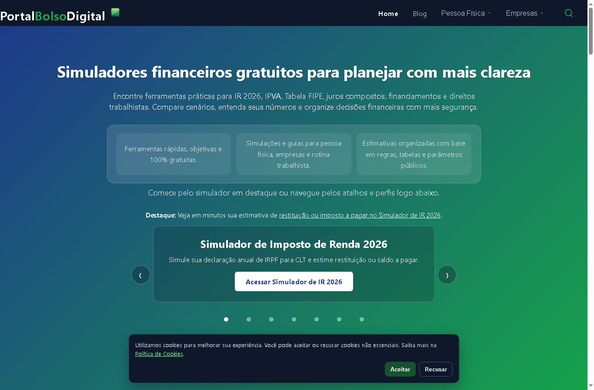
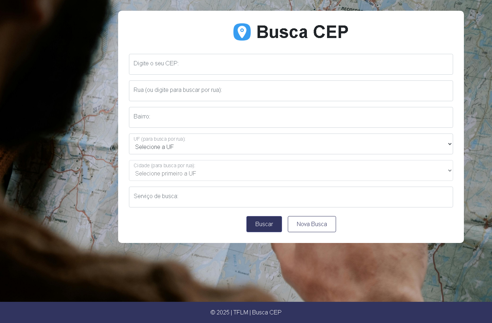
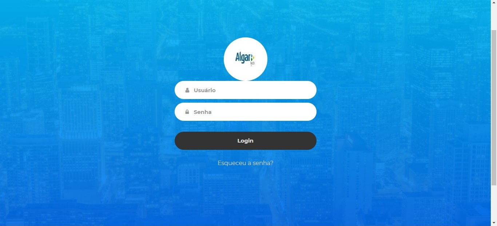
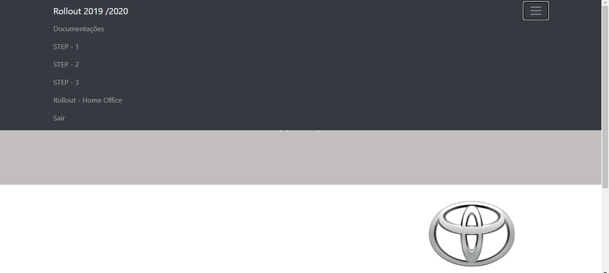
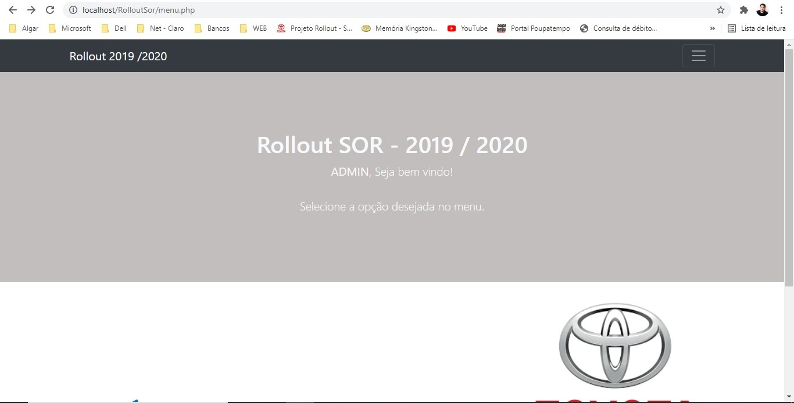
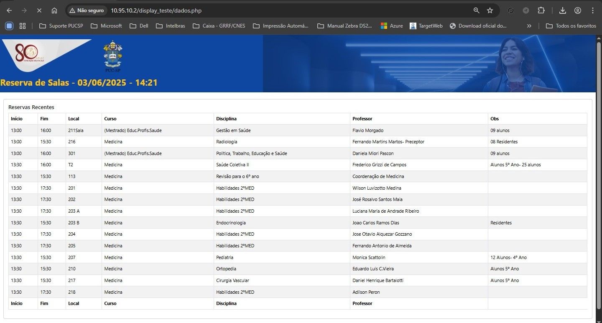

Tiago Ladeira Mantovani / Portfólio
Ideias que viram
soluções digitais.
Da inteligência artificial à organização das finanças: conheça os projetos que desenvolvi para simplificar tarefas, conectar informações e melhorar experiências.
- Inteligência artificial
- Desenvolvimento web
- Automação
Em destaque
Trabalhos recentes
IA aplicada e finanças na prática.
Projeto recente · Inteligência artificial
I-LLOPY AI - Catálogo com assistente de IA
Catálogo online responsivo com um assistente de inteligência artificial que responde dúvidas dos clientes a partir dos documentos da loja, integrando a experiência de e-commerce a uma API própria.
- Chat integrado ao catálogo com respostas em português e indicação das fontes consultadas.
- Arquitetura RAG com processamento de PDFs, embeddings e busca semântica em índice vetorial FAISS.
- Integração com Google Gemini para gerar respostas contextualizadas sobre entregas, trocas e políticas da loja.
- Frontend no GitHub Pages e backend na Oracle Cloud Infrastructure, com Nginx e HTTPS.
Tecnologias: HTML5, CSS3, JavaScript, Python, FastAPI, Google Gemini, Sentence Transformers, FAISS, PyPDF, OCI e Nginx.
Projeto recente · Gestão financeira
OpyZin - Gestão financeira pessoal
Aplicação web para organizar as finanças pessoais, acompanhar receitas e despesas e planejar metas de economia. Desenvolvida com foco em dispositivos móveis e instalação como PWA.
- Dashboard com gráficos, saldo, comparação mensal e despesas por categoria.
- Gestão de contas, cartões, receitas, despesas e contas recorrentes com lembretes de vencimento.
- Metas mensais de economia e exportação dos dados em CSV e Excel.
- Autenticação em duas etapas, dados separados por usuário e sincronização entre dispositivos.
Tecnologias: TypeScript, Vite, PWA, Cloudflare Pages, Pages Functions e banco de dados Cloudflare D1.
Mais experiências
Outros projetos
Web, integrações e melhorias de processos.
Web · SEO e performance
Portal Bolso Digital - Plataforma web
Desenvolvimento e manutenção de plataforma web responsiva focada em simuladores financeiros e conteúdo digital.
- Criação de páginas e simuladores financeiros com HTML5, CSS3 e JavaScript.
- Implementação de SEO técnico, estrutura semântica, responsividade e otimização de Core Web Vitals.
- Integração e gerenciamento de Google AdSense, Google Analytics, Google Tag Manager, Google Search Console e Cloudflare.
- Acompanhamento de métricas, monetização digital, retenção de tráfego orgânico e melhoria contínua da plataforma.
Tecnologias e práticas: HTML5, CSS3, JavaScript, SEO técnico, performance web, UX, Google Analytics, Google Tag Manager, Google Search Console, Google AdSense e Cloudflare.

Integrações · APIs públicas
BuscaCEP - Consulta de endereços
Site desenvolvido para consultar endereços a partir de um CEP informado pelo usuário, com preenchimento automático dos dados retornados pela API. O projeto também permite busca por rua, cidade e UF.
- Consulta de endereço por CEP usando BrasilAPI.
- Busca por rua, cidade e UF usando ViaCEP.
- Carregamento de estados e cidades com dados do IBGE.
- Interface responsiva com campos de formulário e botões de busca.
Tecnologias: HTML5, CSS3, JavaScript ES6, Fetch API, BrasilAPI, ViaCEP e API de localidades do IBGE.

Automação · Processos internos
Rollout - Sistema para geração de formulários
Projeto desenvolvido durante minha atuação na Algar Tech para automatizar a criação de documentações que antes eram feitas por planilhas.
- Criação de documentos de retirada de computadores.
- Geração de checklists de softwares.
- Organização de documentações do processo de rollout.
Tecnologias: PHP, Bootstrap, JavaScript e MySQL.



Interface · Experiência do usuário
Agenda - Redesign da reserva de salas
Atualização do layout da lista de agendamentos de um sistema utilizado na faculdade onde trabalho, com foco na apresentação das reservas e na leitura das informações do dia.

Ampliar imagemDestaques da interface
- Horários e salas organizados em uma tabela para consulta dos agendamentos.
- Linhas alternadas e cabeçalhos para facilitar a leitura de cada reserva.
- Curso, disciplina, professor e observações reunidos na mesma visualização.
Tecnologias: PHP, JavaScript, HTML5 e CSS.